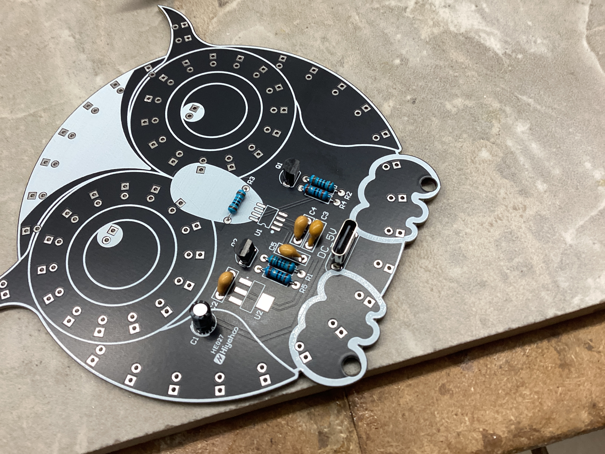
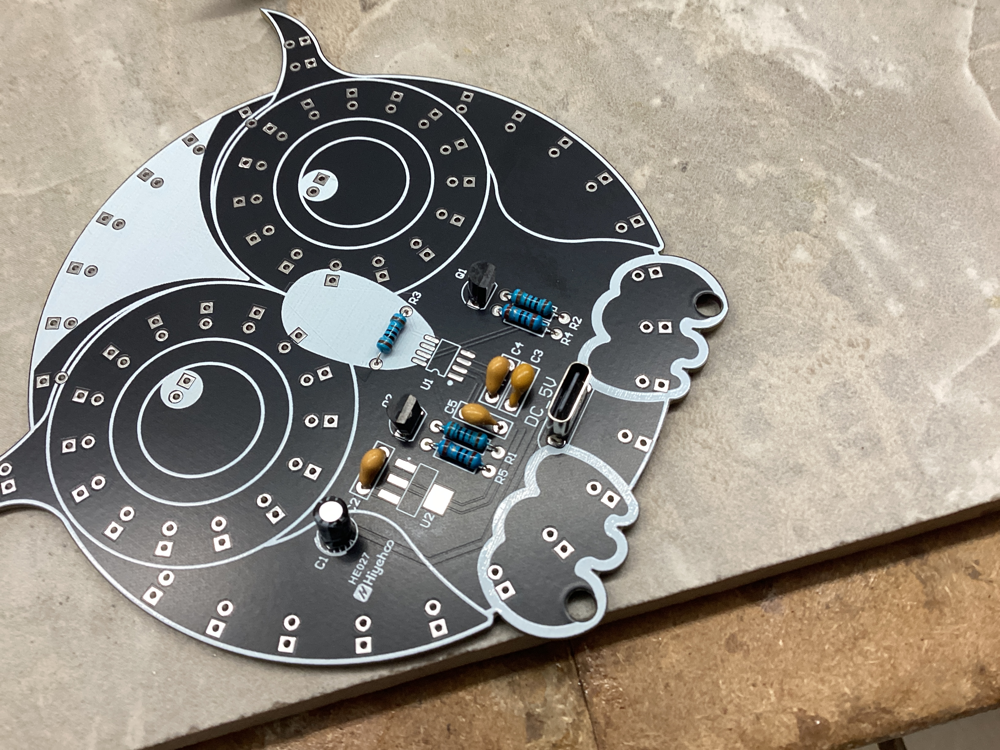

Honors Advanced Topics in Engineering Daily Log
Welcome to my daily log for Senior Engineering! Here, I will outline what I do every day in class.
Navigation
| September | October | November | December | January |
|---|---|---|---|---|
| February | March | April | May | June |
September
09.03.2025
Today, I continued work on my wooden pen. I took my two blocks of wood and turned them on a lathe. I took a chisel and removed material until the blocks were cylindrical, and when they got to the desired thickness, I used fine grit sandpaper to smooth the two blocks. Now, I have the two wooden components for my pen ready, and now, I can assemble the pen and do all of the finishing touches next class.
09.04.2025
Today, I finished my pen. I started off by using the pen press to:
- Press the pen tip into the bottom end of the lower barrel
- Press the ink chamber into the top end of the lower barrel
- Press the clip assembly into the top end of the upper barrel


Once I pressed these components, I could assemble the main sections together. I screwed the ink refill into the ink chamber, slid the ring onto the chamber above the lower barrel, and slid the upper barrel above the ring. Once I did that, my pen was done, and it wrote super well, along with looking very cool.


09.05.2025
Today, I did some research and work on my capstone project. My goal is to assemble the board as soon as possible, so today, I practiced soldering random components to practice boards to prepare for soldering intricate components on the board.
09.08.2025
Today, I researched more about how to configure ArduPilot for a custom board. I decided that I would have to compile ArduPilot from the source code with a custom hwdef.dat file for my specific hardware configuration. From the start, I knew that I wanted to do as much as possible in VSCode, as I am very familiar with it. After doing some researching, I discovered that ArduPilot provides a VSCode integration which allows you to configure and flash ArduPilot directly from VSCode. All I have to do is make a custom board definition (hwdef.dat) for my specific hardware detailing what components I have and how they are connected, then I can use that board definition in the ArduPilot configurator to flash it.
Conveniently, the extension has a built-in tool to make sure that your machine's ArduPilot environment has all of the necessary tools to build and flash the software. I had to install a lot of stuff, such as:
- Python MAVLink (
pip install pymavlink) - MAV Proxy (
pip install mavproxy) - J-Link (through SEGGER application)
In addition, I had to create symlinks between ccache and g++, gcc, arm-none-eabi-gcc, and arm-none-eabi-g++. I did so by adding this line to my ZSH profile (~/.zshrc: export PATH="/opt/homebrew/opt/ccache/libexec:$PATH", then verifying that the installations of ccache, gcc, g++, arm-none-eabi-gcc, and arm-none-eabi-g++ were correct by typing which + the name of the toolchain.
I made sure that they were all installed, but I was unclear as to what exactly their purpose was. I did some digging and these were the results I found:
- GCC: GNU Compiler Collection's C compiler
- G++: GNU Compiler Collection's C++ compiler
- arm-none-eabi-gcc: Compiles .c code into machine code for the ARM Cortex-M family of CPUs
- arm-none-eabi-gcc: Compiles .cpp code into machine code for the ARM Cortex-M family of CPUs
Together, these toolchains work together to compile the .c and .cpp files that make up the ArduPilot source code in order to create machine code for the ARM Cortex-M CPU that powers my flight controller (STM32F767ZIT6).
 { width=400 }
{ width=400 }
09.09.2025
Today, I did some more research on how to set up the software. I read the ArduPilot documentation, STMicroelectronics documentation on their various apps such as STM32CubeMX, STM32CubeIDE, etc. They have many apps, so it was confusing trying to figure out exactly what purpose each app had and whether or not I needed them. The only STMicroelectronics app that I will need is the STM32CubeProgrammer which will allow me to flash the ArduPilot software to the STM32 with an ST-Link via Serial Wire Debug.
09.15.2025
I dedicated today to working on my GitHub documentation. Mr. Dubick taught the class on how to use GitHub, and I worked on refining format and writing out some pages on Github.
09.16.2025
Today, I printed out the chassis for my drone. Although I intend to make my final parts out of either PETG or ABS with 50-80% infill, I printed this part out of PLA since all of the printers in the lab are loaded with PLA, and since it is easier to work with. To save time, I used 15% infill, and to support overhangs, I used tree supports.
After printing the parts out, I confirmed that my battery would fit in the space. The battery was a perfect fit for the space, although I was a little worried about not having enough clearance for screw heads. Although there is space in the CAD mockup, I may inset the screw heads to allow for more room.
The main issues with the parts had to do with durability. The parts have long cylinders for screws to slot into and clamp down on the chassis. Although the screws will add a lot of support, the cylinders are brittle and break easily. To fix this issue, I will add fillets to the base of the cylinders. Also, the plates are pretty thin, so I will have to thicken them by 1-2 in order to reduce flexing.
09.17 - 09.24.2025
In this period of time, I continued work on the 3D CAD design of the drone chassis. I made many small changes in order to increase interior volume, reduce weight, increase strength, and cut down on parts. However, I never printed it out since I was not happy with the final result (and eventually I made a new design from the ground up, more on this later).
09.25 - 09.29.2025
I worked on a mini project to practice soldering. The project is an owl with LEDs which activate by touching a capacitive sensor on the front of the board. While the through hole components were very easy to solder, the 2 ICs on the board with small pin pitches were relatively difficult to solder.
 
 
09.30.2025
Today, I finished soldering all of the LEDs, then tested the board. Unfortunately, only the outside ring of lights turned on and the "eyes" did not work. This is due to an issue with an IC. I'm not sure exactly how I will fix it, but I will likely have to de-solder the chip, clean the IC, clean the pads with a solder wick and flux, then re-solder it.
October
10.01.2025
Today, I started setting up my Raspberry Pi 5 with the AI Hat+. I installed the latest release of Pi OS Bookworm onto a microSD card, then plugged the Pi into a monitor to configure it. I then followed this guide to set up the Pi.
-
I started off by setting up PCIe Gen 3.0 by typing
sudo raspi-configto bring up the Raspi-Config CLI tool, then enabling PCIe Gen 3.0 speeds under Advanced Options. -
After that, I ran
sudo apt install hailo-allin order to install the following:- Hailo kernel device driver and firmware (allows Pi OS to communicate directly with the Hailo-8 NPU)
- HailoRT middleware software (runtime that handles tasks such as loading the AI model onto the chip and managing inference execution)
- Hailo Tappas core post-processing libraries (computer vision libraries that handle post-processing tasks such as decoding bounding boxes, converting raw data into masks, and mapping points onto human body parts)
rpicam-appsHailo post-processing software demo stages (Pi OS's camera stack allowing for video recording, image capturing, live feeds, etc.)
10.07.2025
Today, I printed out the bottom plate for my drone, which is where most of the electronics are mounted.
I noticed the following problems with it:
- Holes too big for camera and do not gripping screws
- Camera mount is too weak to support the camera properly
- The npu chip is slightly pressing on camera, causing the camera connector to heat up as well as forcing the plate to bend very slightly
10.08.2025
Today, I focused on getting the AI working on the Raspberry Pi. Up to this point, I was using the pre-existing hailo_inf_fl.json file in Raspberry Pi OS that uses 3 models: yolov8 (object detection/classification), yolov8 pose (pose detection), and scrfd (facial tracking). While the yolov8 models were correctly compiled for the Hailo 8 (the NPU I am using), the scrfd model was compiled for the Hailo 8L NPU, the lower performance version of the Hailo 8. This returned a warning message that I will likely experience lower performance than expected, since the model was compiled for the incorrect architecture. I wanted to get rid of this error, so I looked at the Hailo Model Zoo Github and looked through the models until I found the link for scrfd compiled for the Hailo 8 NPU.
Once I found the correct .hef file, I looked at the hailo_inf_fl.json file to see where the current scrfd file is located. It was located at /usr/bin/rpi-camera-assets/scrfd_2.5g.hef, so I deleted it and copied the new scrfd_2.5g.hef file to the same location to ensure that the json file would work as expected and know where to locate the model. When I re-ran rpicam-hello -t 0 --rotation 180 --post-process-file /usr/share/rpi-camera-assets/hailo_inf_fl.json, I no longer got the warning that the model is compiled for the wrong NPU. Although it would have previously worked fine, I wanted to ensure that everything was as optimized as possible to ensure maximum performance and the lowest power consumption possible.
Additionally, I printed a new base plate. I made slight modifications to the base plate, and it flexes a lot less.
10.09.2025 - 10.16.2025
In this period of time, I worked on refining and iterating on my CAD designs to maximize internal volume, reduce drag and mass, and make sure everything fits. I printed out many different designs, each with very small changes.
Additionally, I finished the owl project by taking a fine tip soldering iron and melting the excess solder paste on the ICs. Doing so got rid of the excess solder paste that was likely bridging some pads and made the owl work perfectly.
10.17.2025
Today, Mr. Dubick taught us how to use Jekyll and GitHub pages. Although I currently use MKDocs for my portfolio, it's useful to know how to use Jekyll in case I want to use it in the future.
10.20.2025
Today, I started off with refining my original chassis design even more. However, I was not very happy with the level of complexity of the parts They were too weak, complicated, and I decided to start fresh by designing a brand new chassis from the ground up. While the original chassis was a heavily modified version of the Source One open-source drone chassis, the new design was my own from the start and was designed around my specific hardware and design intents.
My overall goals for the new chassis were to increase structural rigidity, reduce complexity, support larger propellers, and have better mounting points for the Raspberry Pi and camera (read more details about chassis development here).
10.21.2025 - 10.31.2025
In this period of time, I worked on a mini-project: milling a PCB on the CNC machines in the Fab Lab (read more under the PCB Milling page). Mr. Dubick provided gerber files, and showed us how to use MakeraCAM and Carvera Controller to create toolpaths and run them on the Carvera Desktop CNC machines.
November
11.03.2025 - 11.07.2025
In this period of time, I worked on the new chassis. I made incremental changes almost every single day in order to have strong mounts in the front for the Raspberry Pi and camera module, as well as making sure that things like the power switch and power indicator LED on the bottom of the flight controller board have cutouts in the chassis so they're accessible. Throughout this period of time, I printed 9 variations of the chassis before ending up with one that did everything correctly.
11.10.2025 - 11.14.2025
In this period of time, I started work on the drone's electronics. I tried to solder small capacitors to the flight controller first with solder and a fine tip soldering iron, and it did not work at all. Even the smallest solder in the lab was far too thick for the tiny pads, so melting any solder would flood the pads with solder and would knock the capacitor off the pads. Then, I tried to use solder paste. Although it was easier to precisely apply solder paste to the pads with the paste, it was very difficult to solder with the iron. The reason for this is because the capacitors are so small that heating up end to melt the paste ends up heating up the other end, causing the capacitor to melt the solder and disconnect from the pad. My next idea was to laser cut a stencil out of mylar so I could precisely apply solder paste, but when I tried making the stencil with the laser cutter, the mylar deformed and made the holes too big.
11.22.2025 - 11.30.2025
No school - Thanksgiving break.
December
12.01.2025 - 12.10.2025
In this period of time, Mr. Dubick taught the class about designing circuits with Arduino and programming in C. Although I was already experienced with creating the physical circuits, learning to code in C was very helpful and will likely help me understand the ArduPilot code better in the future.
12.11.2025 - 12.15.2025
In this period of time, I worked on the drone's electronics. Instead of using a soldering iron and normal solder, Angelina recommended using solder paste and hot air to solder on surface mount components. Although it was still challenging, it was a lot easier than using solder and a traditional iron.
12.16.2025
Today, I milled the topography out of a block of hardwood (more in this under Topography). Milling the block took around 6 hours, so while it was milling, I worked on documentation.
12.18.2025
I spent today catching up on documentation.
January
01.08.2026 - 01.13.2026
01.14.2026
Today, I continued work on the redesigned chassis. I designed a new part that acts as both landing gear and as a stiffener. It mounts flush under the main body with 8 mounting holes and has extruded pegs to keep the drone from sitting flat on the floor and absorb shock under landing. I will print prototypes out of PLA and print the final product using a mix of TPU and PETG; the main plate will be PETG and the extruded pegs will be TPU for better shock absorption.